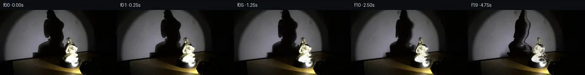

![首帧]()

Round 00
2026-11-05T04:43:01.501456+00:00像素候选变化代码 +230/−0inspection 更新
pixels 3c0a112340391bcb · code 41309ec7c2160efe
查看本轮 generate.py 真实 diff
--- previous/generate.py
+++ current/generate.py
@@ -0,0 +1,230 @@
+"""Single-image, local numerical pixel animation; no external renderer or model."""
+from pathlib import Path
+import json
+import numpy as np
+from PIL import Image, ImageDraw
+import cv2
+from scipy.ndimage import gaussian_filter, gaussian_filter1d, binary_dilation
+from artifact_io import save
+
+ROOT = Path(__file__).resolve().parent
+S = 4
+W, H = 256, 144
+source = np.asarray(Image.open(ROOT / 'first_frame.png').convert('RGB'))
+yy, xx = np.mgrid[:H, :W].astype(np.float32)
+wall = yy < 114.0 - 0.1175 * xx
+
+
+def polygon(points, scale=1):
+ im = Image.new('L', (W*scale, H*scale))
+ ImageDraw.Draw(im).polygon([(round(x*scale), round(y*scale)) for x,y in points], fill=255)
+ return np.asarray(im, dtype=np.float32) / 255
+
+
+shadow_outline = [
+ (102,-5),(120,-5),(121,6),(125,14),(132,20),(140,25),
+ (142,31),(140,40),(138,45),(140,53),(141,61),(138,69),
+ (138,73),(142,77),(143,84),(147,90),(149,100),(142,108),
+ (71,109),(71,94),(80,92),(82,84),(86,78),(94,73),
+ (103,69),(104,64),(108,61),(108,57),(104,61),(100,63),
+ (96,61),(93,55),(92,45),(94,30),(96,24),(99,21),
+ (103,20),(101,16),(102,10),(105,6)
+]
+figure_outline = [
+ (149,60.5),(152,61),(154,63),(156,68),(158,74),
+ (162,77),(165,79),(167,82),(169.5,83),(169.5,87.5),
+ (168,91),(165,95),(165,97),(168,98.5),(170,100),
+ (170,103),(168,105),(169,106),(172,107),(173,109),
+ (172,112),(170,114),(165,115.5),(153,116),(145,115),
+ (141,113),(139,111),(137,109),(138,106),(140,103),
+ (143,100),(145,98),(146,96),(144,94),(142,95),
+ (138,95),(137.5,92),(139,88),(141,83),(143,79),
+ (144,76),(145,73),(146,71),(144,68),(143.5,66),
+ (145,64),(147,62)
+]
+shadow_roi = polygon(shadow_outline) > 0
+figure_roi = polygon(figure_outline) > 0
+
+# The large occlusion is entirely inside the smooth lit part of the wall.
+# Fit its visible illumination, then harmonically interpolate fit residuals.
+blocked = binary_dilation(shadow_roi | figure_roi, iterations=5)
+inside_spot = ((xx-108)/100)**2 + ((yy-88)/107)**2 < 0.79
+fit_valid = wall & inside_spot & ~blocked & (source.mean(2) > 35)
+xn, yn = (xx-110)/100, (yy-65)/80
+terms = [(i,j) for i in range(5) for j in range(5-i)]
+design = np.stack([xn**i * yn**j for i,j in terms], axis=-1)
+coeff, *_ = np.linalg.lstsq(design[fit_valid], source[fit_valid].astype(float), rcond=None)
+model = np.clip(design @ coeff, 0, 255).astype(np.float32)
+recover = binary_dilation(shadow_roi | figure_roi, iterations=2) & wall
+residual = source.astype(np.float32)-model
+residual[recover] = 0
+for _ in range(1000):
+ averaged = cv2.filter2D(residual, -1, np.array([[0,.25,0],[.25,0,.25],[0,.25,0]],np.float32), borderType=cv2.BORDER_REFLECT)
+ residual[recover] = averaged[recover]
+clean_wall = np.clip(model+residual,0,255)
+
+# Recover the very small tabletop area behind the porcelain with local inpaint.
+inpaint_mask = (binary_dilation(figure_roi, iterations=1)*255).astype(np.uint8)
+table_fill = cv2.inpaint(source, inpaint_mask, 4, cv2.INPAINT_TELEA).astype(np.float32)
+background = source.astype(np.float32).copy()
+background[recover] = clean_wall[recover]
+background[figure_roi & ~wall] = table_fill[figure_roi & ~wall]
+
+# Shadow transmission, measured from the original image relative to recovered
+# illumination. Preserve the penumbra and small openings in the silhouette.
+ambient = np.array([3.5,2.5,1.0],np.float32)
+transmission = np.clip((source.astype(float).mean(2)-ambient.mean()) /
+ np.maximum(clean_wall.mean(2)-ambient.mean(),1),0,1)
+shadow_alpha = (1-transmission).astype(np.float32)
+shadow_alpha *= binary_dilation(shadow_roi, iterations=2) & wall
+shadow_alpha = np.clip(shadow_alpha,0,1)
+
+large_source = cv2.resize(source.astype(np.float32), (W*S,H*S), interpolation=cv2.INTER_CUBIC)
+large_bg = cv2.resize(background, (W*S,H*S), interpolation=cv2.INTER_CUBIC)
+large_shadow = cv2.resize(shadow_alpha, (W*S,H*S), interpolation=cv2.INTER_LINEAR)
+large_figure = polygon(figure_outline,S)
+large_figure = gaussian_filter(large_figure, .6)
+Y, X = np.mgrid[:H*S,:W*S].astype(np.float32)
… diff truncated; 143 more lines …